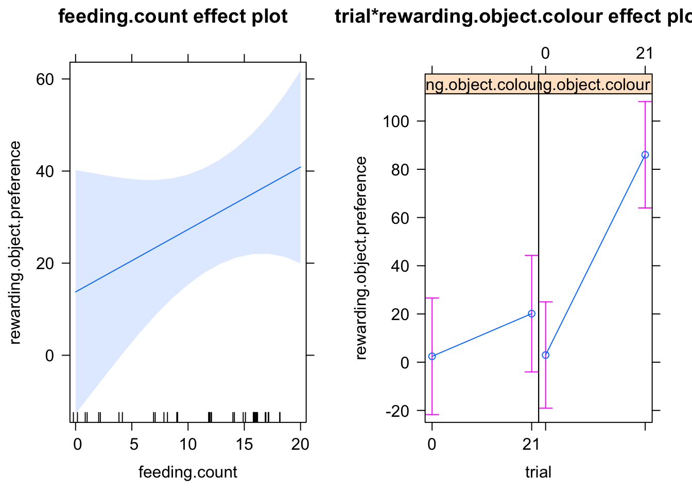

6 Model 5 - Is there a difference in feeding attempts between treatments?
A discrepancy in reinforcement between treatments may influence performance on a final preference test. To see whether there was a difference in feeding between treatments I counted the number of trials in which an individual fish ate throughout all of training and compared the feeding counts between treatments. To do this I fit a generalized linear model with a negative binomial distribution. The response variable 'feeding count' is a sum of the number of trials in which a guppy ate.
Variables
feeding.countis the number of trials in which an individual fish aterewarding.object.colouris the identity of the rewarding object (blue or green)
Model
feeding.data.model =
glm.nb(feeding.count ~ rewarding.object.colour,
data = my.feeding.data)Results
| term | estimate | std.error | statistic | p.value |
|---|---|---|---|---|
| rewarding.object.colourgreen | 0.0709929 | 0.2628925 | 0.2700452 | 0.787 |
I found no significant difference in the amount of feeding done by individuals trained to green versus individuals trained to blue (Figure 6.1, p = 0.787) which suggests that the observed group-level differences in final test performance between blue-trained guppies versus green-trained guppies cannot be explained by differences in performance during training.
Figure 6.1: Average number of trials in which a fish fed during training. Data are means +/- 95% confidence intervals
Model Residuals
